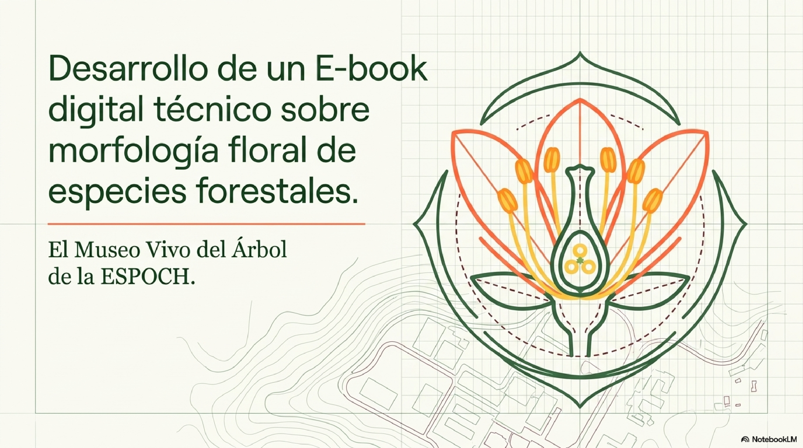
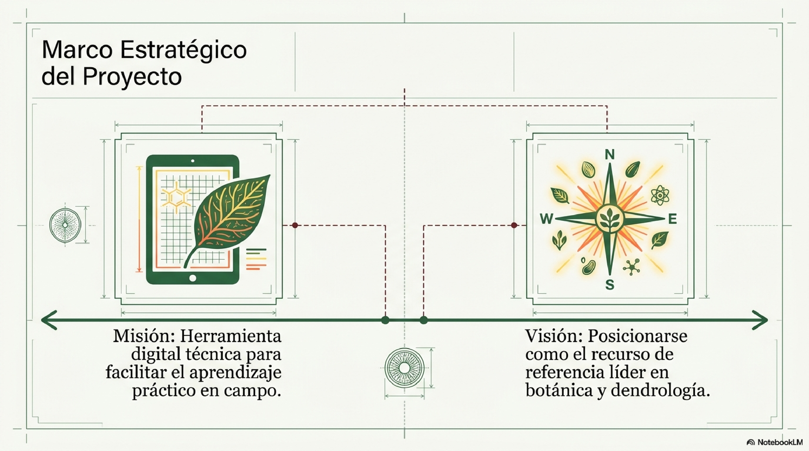
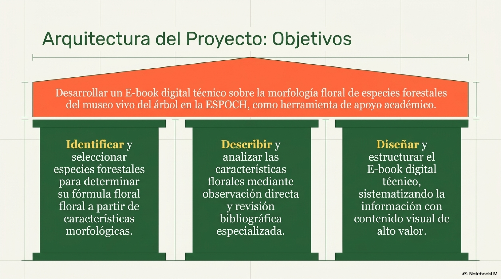
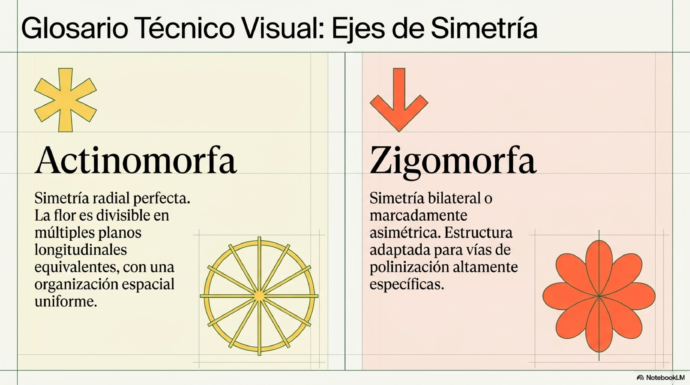
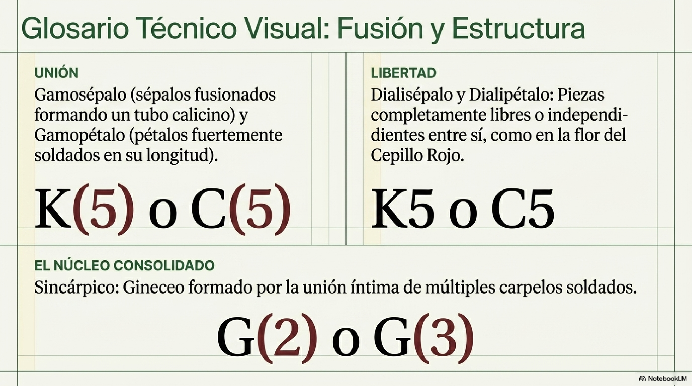

Un recurso didáctico para la comunidad académica.





Estandarizar el registro botánico y la interpretación de diagramas y fórmulas florales de las especies forestales de la ESPOCH y la Sierra ecuatoriana, facilitando una base técnica para la investigación taxonómica avanzada.
Descodificar con precisión la simbología botánica para representar la composición y disposición de los verticilos florales.
Documentar las características diagnósticas del perianto, androceo y gineceo para la identificación taxonómica rigurosa.
Identificar la relevancia de las estructuras florales en los procesos de propagación, restauración ecológica y manejo de recursos forestales en el callejón interandino.
“Proveer a los estudiantes de Ingeniería Forestal y a la comunidad académica de la ESPOCH una herramienta digital técnica y visualmente innovadora que facilite el aprendizaje de la morfología floral. Nuestra misión es sistematizar el conocimiento científico de las especies del Museo Vivo del Árbol, transformando datos complejos en un recurso didáctico de fácil acceso que fortalezca la identificación botánica en campo y el valor de nuestra biodiversidad universitaria”.
“Consolidarse como el recurso digital de referencia líder en el estudio de la arquitectura floral y dendrología dentro de la Facultad de Recursos Naturales. Aspiramos a ser un modelo de innovación tecnológica aplicada a la botánica, que impulse la formación de profesionales forestales de excelencia, capaces de comprender y conservar la riqueza natural de la región andina mediante el uso de herramientas de vanguardia”.
Explora el contenido completo del e-book digital.